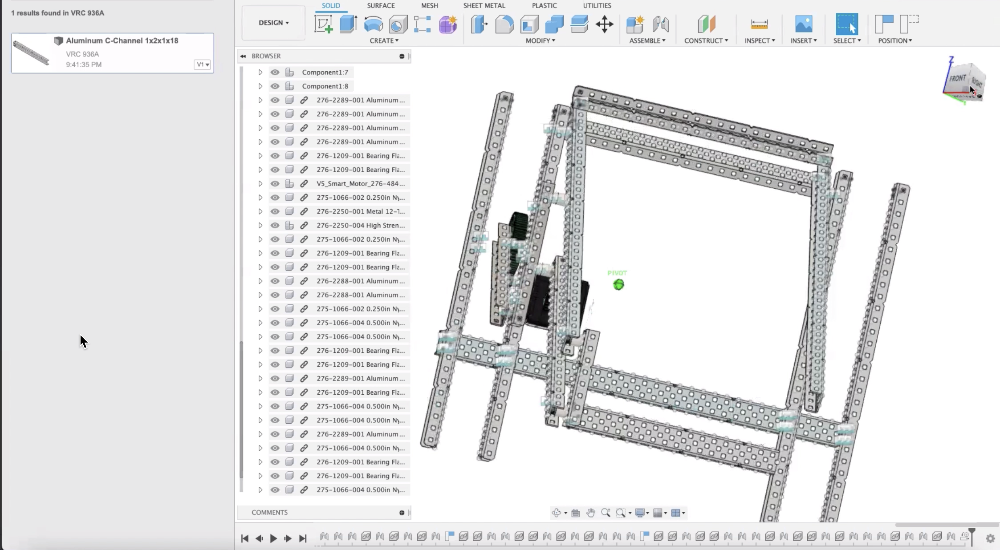

Skills
Here are some of my projects and initiatives. I am dedicated to broadening my skill set and pursuing these passions because I desire to be a part of something larger than myself, to give back to a community that has given so much to me. I will show the same level of devotion when serving in SDLT.
Programming
Swift + Python + JavaScript + CSS
I initially took interest in computer science because its relevance in this generation is becoming increasingly apparent, and I felt that it was something I should know. Now, from class projects to online self-study courses, programming has become my passion.
- Jumping Game - Python
- Bingo App - Swift
- Login App - Swift
- Kristy Luk Website - JavaScript & CSS
JavaScript and CSS were used to code this website. I felt the desire to self learn these programming languages because of its interoperability, server load, etc. I took self-study courses on CodeAcademy, and eventually CSS was implemented for cosmetic effects.

CAD
Fusion 360
2021
Robotics
I was introduced to the joys of CAD in the robotics club, and after learning the basics in CAD tutorial sessions, I began to self-learn through courses on Autodesk. Here is a screenshot of a lift I am in progress of completing, and I will work on implementing gears as the next step.
TinkerCad
2020
3D Printing
Last year, a few friends and I were intrigued by robotics, and worked together to build a 3D printed spider robot. We coded the robot using MakeCode micobit, and prototyped it
Video-editing
Final Cut Pro
2021
I have some previous exposure to video-editing, specifically Final Cut Pro, including immersive titles and graphics, VR headset playback, etc.
Graphic design
Adobe After Effects
2020
I have used Adobe After Effects in the past for animations and creating motion pictures. During the spider project mentioned above, graphic design has also helped me model the angles between the spider's legs, another form of prototyping.
Leadership & Teamwork
Math & Science Center (MSC) Tutor
Spring 2022 - Present
It is a blessing to have the chance to serve as a tutor at the MSC - the intersection of STEM and service - my greatest passions.
- Dedicated hours tutoring peers one-on-one monthly
- Raising awareness for the MSC among classmates
MathCounts Team + Coach
Fall 2020 - Present
Serving the student body as a MathCounts team member in MS and coach in HS has given me the chance to strive to be the upperclassmen role models I look up to who devote themselves to fostering an interest in math in our community.
- Hosted 8 club meetings at the MS campus
- Dedicated on average an hour a week crafting lesson plans
Robotics Team
Fall 2021 - Spring 2022
I have been so humbled to work with VEX Robotics Team 936A, a group of highly talented role models dedicated to robotics. It was a magical experience, and I am forever grateful.
- Writing log entries and collecting photos for the engineering notebook
- Dedicated 2-4 hours a week on average before online school resumed
- Participated in CAD training sessions with leaders and an alumnus
Musicus Inspires International Travelling Orchestra Principal Cellist
Fall 2021
My commitment to the cello and piano is second only to my dedication to computer science. Serving as principal cellist has allowed me to give back to the international student community in a way I love.

- Invited to perform alongside world-class musicians (left - Mr. Trey Lee, right - Ms. Hila Karni)
- Leading sectionals, combined rehearsals, and participating in masterclasses daily after school
- Invited to perform at Carnegie Hall in NYC, Solitär, Mozarteum in Salzburg, Kleine Zaal, Concertgebouw in Amsterdan, and other illustrious music venues worldwide
Student Ambassador
2017 - 2021
Upper Primary + Middle School
- Boosting class of 2025 spirit (emcee at G8 celebration - left, speaker at G8 ceremony - right)
- Stewarding and leading school events
- Collaborated with principals, associate principals, and the director of admissions in various projects
Forensics Speaking Team
2021 - Present
Forensics speaking is beautiful because it allows us to form connections, influence decisions, and inspire change, which is that I ultimately aspire to achieve as a student at HKIS. I have been blessed to represent HKIS in various occasions, ie APAC, HKFYG, JINDIVS; by refining the art of public speaking, I hope to use my voice as a tool in motivating positive change.